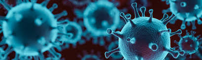

Los coronavirus son una familia de virus que pueden causar enfermedades como el resfriado común, el síndrome respiratorio agudo grave (SARS, por sus siglas en inglés), y el síndrome respiratorio de Oriente Medio (MERS, por sus siglas en inglés). En 2019 se identificó un nuevo coronavirus como la causa de un brote de enfermedades que se originó en China.
Este virus ahora se conoce como el síndrome respiratorio agudo grave coronavirus 2 (SARS-CoV-2). La enfermedad que causa se llama enfermedad del coronavirus 2019 (COVID-19). En marzo de 2020 la Organización Mundial de la Salud (OMS) declaró que este brote de COVID-19 es una pandemia.
Las organizaciones de salud pública, incluyendo los Centros para el Control y la Prevención de Enfermedades de los Estados Unidos (CDC) y (OMS) están vigilando la pandemia y publicando actualizaciones en sus sitios web. Estos grupos también han publicado recomendaciones para prevenir y tratar esta enfermedad.

Causas
La infección con el nuevo coronavirus (síndrome respiratorio agudo grave coronavirus 2, o SARS-CoV-2), causa la enfermedad del coronavirus 2019 COVID-19.
El virus parece trasmitirse fácilmente entre las personas, y, con el paso del tiempo, se continúa descubriendo más sobre cómo se propaga. Los datos muestran que se contagia de persona a persona entre aquellos que están en contacto cercano (dentro de aproximadamente 6 pies, o 2 metros). El virus se trasmite por gotitas respiratorias que se liberan cuando alguien que lo tiene tose, estornuda o habla. Una persona que está cerca puede inhalar estas gotitas, o las gotas pueden caerle en la boca o la nariz.
También puede propagarse cuando una persona toca una superficie donde se encuentra el virus y luego se toca la boca, la nariz, o los ojos, aunque no se considere que esta sea una de las principales maneras en que se trasmite.
Factores de riesgo
Los factores de riesgo de la COVID-19 parecen incluir:
contacto cercano (menos de 6 pies o 2 metros) por lo menos por 15 minutos con alguien que tiene la COVID-19
que una persona infectada haya tosido o estornudado muy cerca de ti
Complicaciones
Aunque en su mayoría las personas con la COVID-19 tienen síntomas entre leves y moderados, la enfermedad puede llevar a complicaciones médicas graves y, en algunas personas, causar la muerte. Los adultos mayores o las personas con afecciones crónicas están a mayor riesgo de enfermarse gravemente con la COVID-19.
Algunas de las complicaciones pueden incluir:
Neumonía y problemas para respirar
Insuficiencia de varios órganos
Problemas cardíacos
Una afección pulmonar que hace que poca cantidad de oxígeno pase a través del torrente sanguíneo a los órganos (síndrome de dificultad respiratoria aguda)
Coágulos sanguíneos
Lesión renal aguda
Infecciones virales y bacterianas adicionales
Síntomas
Los signos y síntomas de la enfermedad por coronavirus 2019 (COVID-19) pueden aparecer entre dos y 14 días después de la exposición al virus. Este período entre la exposición y antes de la aparición de los síntomas se llama el período de incubación. Los signos y los síntomas más comunes pueden incluir:
Fiebre
Tos
Cansancio
Los primeros síntomas de la COVID-19 pueden incluir pérdida del gusto o del olfato.
Otros síntomas pueden incluir:
Falta de aire o dificultad para respirar
Dolores en los músculos
Escalofríos
Dolor de garganta
Goteo de la nariz
Dolor de cabeza
Dolor en el pecho
Esta lista no incluye todos los posibles signos y síntomas. Se han reportado otros síntomas menos comunes, como erupción en la piel, náuseas, vómitos, y diarrea. Los niños presentan síntomas similares a los de los adultos, y generalmente tienen una enfermedad leve.
La gravedad de los síntomas de la COVID-19 puede ser de muy leve a extrema. Algunas personas pueden tener solo unos pocos síntomas, y otras quizás no tengan ninguno. En algunas personas quizás los síntomas empeoran, como más problemas para respirar y neumonía, aproximadamente una semana después de comenzar.
Los adultos mayores corren un mayor riesgo de enfermarse de más gravedad con la COVID-19, y el riesgo aumenta con la edad. Las personas que ya tienen afecciones de salud crónicas también pueden tener un riesgo más alto de enfermarse gravemente. Las afecciones de salud graves que aumentan el riesgo de enfermarse de gravedad con la COVID-19 incluyen:
Enfermedades cardíacas graves, como insuficiencia cardíaca, enfermedades de las arterias coronarias, o miocardiopatía
Cáncer
Enfermedad pulmonar obstructiva crónica (EPOC)
Diabetes tipo 2
Obesidad grave
Enfermedad renal crónica
Enfermedad de células falciformes
Sistema inmunitario debilitado por trasplante de órganos sólidos
El riesgo de una enfermedad más grave puede verse aumentado por otras afecciones, como ser:
Asma
Enfermedad hepática
Enfermedades pulmonares crónicas, como fibrosis quística
Afecciones del cerebro y del sistema nervioso
Sistema inmunitario debilitado por trasplante de médula ósea, VIH, o algunos medicamentos
Diabetes tipo 1
Presión arterial alta
Esta lista no incluye todos los signos y síntomas posibles. Otras afecciones de salud subyacentes pueden aumentar el riesgo de enfermarte de gravedad con la COVID-19.
Prevención
Aunque no haya ninguna vacuna para prevenir la COVID-19, puedes tomar medidas para reducir el riesgo de infección. La OMSy los CDC recomiendan tomar estas precauciones para evitar la COVID-19:
Evita eventos con mucha gente, y reuniones multitudinarias.
Evita contacto cercano (menos de 6 pies o 2 metros) con cualquier persona que esté enferma o que presente síntomas.
Quédate en casa cuanto sea posible y mantén distancia entre tú y otros (6 pies o 2 metros) , especialmente si estás a mayor riesgo de una enfermedad grave. Ten en cuenta que algunas personas pueden tener la COVID-19 y contagiar a otros, aunque no tengan síntomas ni sepan que tienen la COVID-19.
Lávate las manos con frecuencia con agua y jabón por lo menos por 20 segundos, o usa un desinfectante para manos con base de alcohol que contenga al menos 60% de alcohol.
Cúbrete la cara con una mascarilla de tela cuando estés en lugares públicos, como la tienda o el supermercado, donde es difícil evitar el contacto cercano con otros, especialmente si estás en un área donde continúa el contagio a nivel de la comunidad. Usa solo mascarillas de tela que no son para uso médico — las mascarillas quirúrgicas y los respiradores N95 deben reservarse para los proveedores de atención médica.
Cúbrete la boca y la nariz con el codo o un pañuelo descartable al toser o estornudar. Desecha el pañuelo descartable usado. Lávate las manos de inmediato.
Evita tocarte los ojos, la nariz, y la boca.
Evita compartir platos, vasos, toallas, ropa de cama y otros objetos de la casa si estás enfermo.
Limpia y desinfecta diariamente las superficies que se tocan con frecuencia, como los pestillos de las puertas, los interruptores de luz, los dispositivos electrónicos, y las encimeras.
Quédate en casa y no vayas al trabajo, a la escuela, ni a lugares públicos si estás enfermo, a no ser que sea para recibir atención médica. Evita el transporte público, los taxis y los viajes compartidos si estás enfermo.
Si tienes una afección de salud crónica y puedes correr más riesgo de una enfermedad grave, habla con tu doctor sobre otras maneras de protegerte.